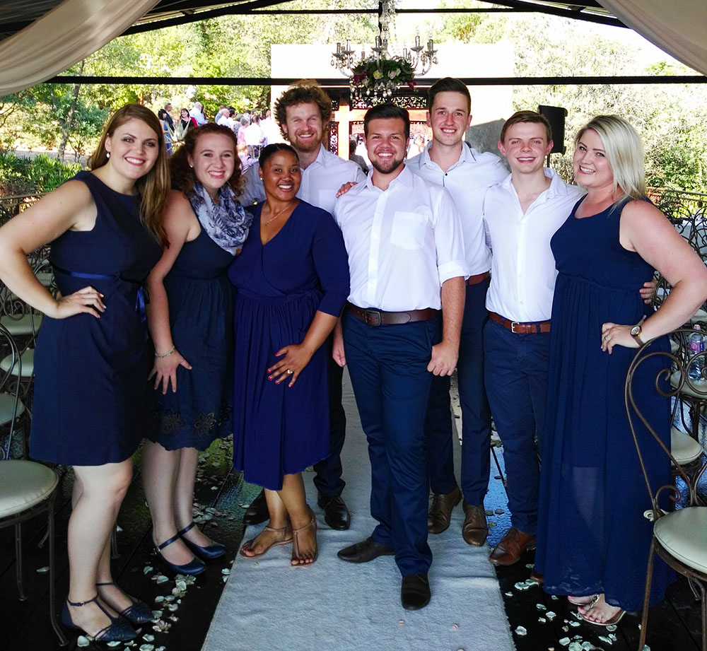

The Wedding Singers
The Wedding Singers is a collective of experienced singers based in the Pretoria specializing in live vocal music at weddings.
We aim to make your dream wedding extra special by adding the classy touch of live music. We are able to cater to your exact specification and the amount of singers, types of voices and requested music, all depending on your requirements.
We have a broad field of experience and we can provide music in the following genres:
- Classical Vocal Music
- Modern Vocal Music
- Religious/Sacred works
- Church favourites (from any denomination)
- Arrangements of pop/rock favourites
We can fit into the bigger scheme of your wedding exactly where you want. We can sing before, during or after the service and can even sing during the reception. Don't hesitate to contact us for more information. We are up for anything and strive to make your big day extra special!
About Us
We are a group of passionate singers who came together to sing at a close friend's wedding. We realized that there might be a bigger need for this kind of service and so we made our services available to the public as The Wedding Singers. We are all musically trained and we are highly experienced in choir music. Our members have partaken in various vocal projects and we have all sung in choirs over the years. These include:
- University of Pretoria TUKS Camerata
- University of Pretoria Concert Choir
- University of Pretoria Youth Choir
- Pretoria Capital Singers (various projects)
- The Chamber Singers
- Brooklyn Vocal Artists
- Vox Novus
- Akustika Chamber Singers
Pricing Information
Due to the nature of the service that we offer, the pricing will differ greatly from wedding to wedding.
Group size, amount of songs, complexity of the music and the location of the venue will all affect the final cost.
The smallest group available to sing is four and we will travel to any venue within 30km of Pretoria without additional cost.
The base cost to hire The Wedding Singers is R2500 that will include the following:
- Four Singers
- Preparation of one musical piece and also sung once (provided the musical piece does not need to be arranged first)
- Travel to any venue within 30km of Pretoria
For venues farther than 100km outside Pretoria meals and accommodation for all the singers might have to be arranged at the discretion of the organizer.
We are an a capella group and as such perform without musical instruments and/or backtracks. We can if needed perform with orchestral accompanyment. This will incur an extra cost and will be quoted as such.
Contact Us
Feel free to contact us any time at info@theweddingsingers.co.za and we will come back to you as soon as possible!
Like us on our Facebook page to find out more, see photos and read reviews!